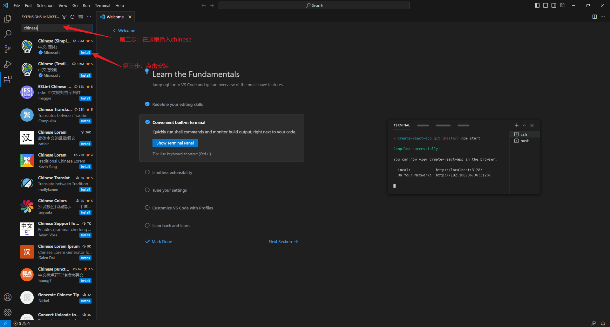

智屁
第一步：下载资源
1.下载python
首先打开代大大主页，点击“python安装”下滑到页面底部。（按下图选择版本）
2.下载VScode
打开代大大主页，点击“vscode安装”。（按下图点击下载）
第二步：开始安装python
1.文件总览
双击运行“python-3.11.4-amd64.exe”，出现以下界面
勾选“Use admin privileges when installing py.exe”和“Add python.exe to PATH”。
点击“Install Now”即可进行安装。
等待安装完成：
点击close安装完成。
现在测试是否安装完成：（根据图片进行操作）
键盘按下“win+r”打开运行对话框
输入“python”按回车，出现以下窗口即代表安装成功
第三步：开始安装VScode
双击运行“VSCodeUserSetup-x64-1.81.1.exe”，出现以下界面
点击“我同意此协议”，接着点击“下一步”，出现以下界面
勾择全部选项，点击下一步，出现以下界面

点击安装，出现以下界面
等待安装完成，出现以下界面
点击“完成”即完成VScode安装
配置VScode
在桌面上找到下图图标并双击打开
出现以下界面
根据图片进行操作
等待软件重启，出现以下界面
重复上方操作
到这里就安装完成了
欢迎加入代大大的qq交流群：576608905